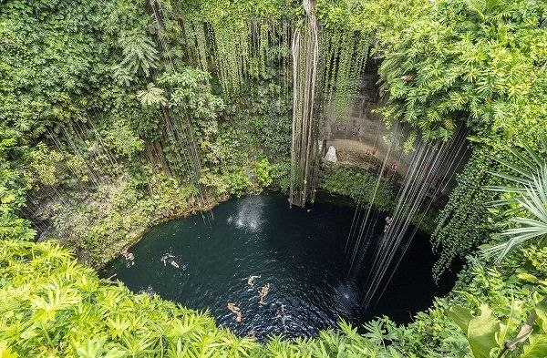
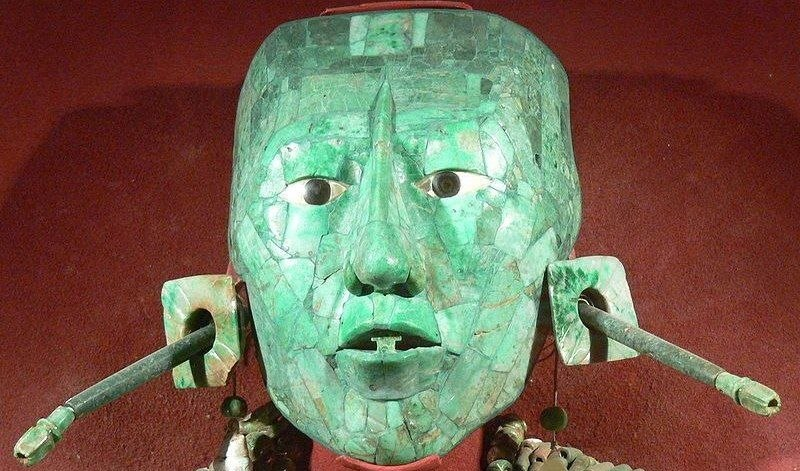
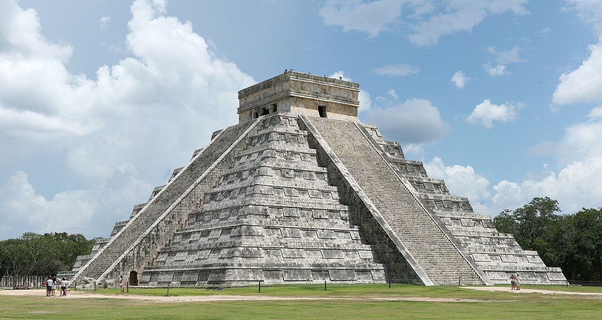

Введение и общая информация
Цивилизация майя — это одна из самых ярких, высокоразвитых и загадочных коренных цивилизаций доколумбовой Америки, чье наследие до сих пор поражает воображение ученых. В отличие от единых империй инков или ацтеков, майя никогда не составляли единого централизованного государства. Они представляли собой конгломерат независимых городов-государств, объединенных единым языковым пространством, схожей письменностью, сложной религиозной системой и глубокими культурными традициями.
Область расселения майя охватывала огромную территорию Центральной Америки площадью около 300 000 км². Этот регион включал в себя современные юго-восточные штаты Мексики (Юкатан, Кинтана-Роо, Кампече, Табаско, Чьяпас), а также земли Гватемалы, Белиса, западного Гондураса и Сальвадора. Ландшафт региона поразительно разнообразен: от иссушенных известняковых равнин полуострова Юкатан с подземными карстовыми озерами (сенотами) до непроходимых влажных тропических джунглей Гватемалы и суровых вулканических высокогорий.

Природный ареалГеографический фактор
Отсутствие крупных речных систем на севере Юкатана заставляло майя строить города вокруг естественных провалов в известняке — сенотов. Они служили единственными источниками питьевой воды и одновременно почитались как священные врата в подземный мир.
Историческая хронология
Архаичный период
До 2000 г. до н.э.Эпоха становления оседлого образа жизни и зарождения земледелия. Кочевые племена постепенно осваивают окультуривание маиса, фасоли и тыквы, формируя первые постоянные поселения. Создаются начальные образцы керамики и закладываются фундаментальные социальные связи.
Доклассический период
2000 г. до н.э. — 250 г. н.э.Период формирования архитектуры и первых протогородов (Эль-Мирадор, Накбе). Зарождается иероглифическая письменность, астрономические наблюдения и точные календарные системы. Общество усложняется, выделяется религиозная и военная элита.
Классический период
250–900 гг. н.э.Золотой век цивилизации с расцветом автономных городов-государств (Тикаль, Паленке, Калакмуль, Копан). Наблюдается пик развития астрономии, математики, изобразительного искусства и строительства ступенчатых пирамид. Население региона достигает своего максимума.
Постклассический период
900–1524 гг. н.э.Время масштабной трансформации после коллапса южных центров. Центр культуры смещается на север Юкатана, где расцветают новые мегаполисы: Чичен-Ица, Ушмаль и Маяпан. Активно развивается прибрежная торговля, укрепляются связи с народами Центральной Мексики.
Испанское завоевание
1517–1697 гг.Эпоха крушения традиционного уклада. Из-за отсутствия единой империи и политической рассредоточенности городов конкистадорам потребовалось почти два века для полного подчинения региона. Последний оплот — город Нохпетен — пал лишь в 1697 году. Независимая цивилизация майя просуществовала почти 3700 лет.
Правовая система
Судопроизводство
Правосудие осуществляла местная администрация и вожди (бахабы). Высшей инстанцией по тяжким делам являлся сам правитель. Права на обжалование судебного вердикта не предусматривалось.
Наказания
За умышленное убийство назначалась смертная казнь или обращение виновного в рабство семье жертвы. Кража каралась возмещением ущерба или обращением в рабство до выплаты долга.


Религия и устройство космоса
Пантеон
Майя поклонялись многочисленным богам. Среди ключевых фигурировали Ицамна (бог неба и мудрости), Чак (бог дождя и грозы) и Кукулькан (Пернатый Змей).
Космология
Вселенная делилась на три мира: подземное царство из 9 уровней (Шибальба), земную сферу и небесный мир из 13 уровней. Связующим звеном выступало Мировое Древо Сейба.
Ритуалы
Для сохранения космического порядка совершались обряды кровопускания и жертвоприношения. Ритуальная игра в мяч (пок-та-пок) воспроизводила движение небесных тел.
Архитектурные и инженерные решения
Ступенчатые храмы
Пирамиды сооружались как многоярусные каменные платформы. Они служили святилищами, астрономическими ориентирами и усыпальницами правителей.
Строительные технологии
Не используя колесо и тягловых животных, майя вручную обрабатывали и перемещали огромные каменные блоки, скрепляя их известковым раствором.
Градостроительство
В центрах городов размещались широкие церемониальные площади, обсерватории (Караколь в Чичен-Ице), игровые стадионы и резные стелы.
Наука и письменность
Иероглифика
Сложная логосиллабическая система, содержавшая около 800 знаков. Тексты высекались на каменных стелах и записывались в складные кодексы из коры фикуса.
Математика и нуль
Двадцатеричная система счисления опиралась на точечно-тиресную запись. Майя одними из первых в мире самостоятельно ввели математическое понятие нуля.
Календарная система
Майя сопоставляли священный календарь Цолькин (260 дней), солнечный Хааб (365 дней) и систему Долгого счета для ведения летоисчисления.
Причины упадка городов
Опустение южных городов в IX веке было вызвано сочетанием факторов: затяжными засухами, деградацией почв, перенаселением и разрушительными междоусобными войнами.
Культурное наследие
Сельское хозяйство майя подарило миру кукурузу, какао, томаты и фасоль. Архитектурные комплексы (Тикаль, Паленке, Чичен-Ица) внесены в список Всемирного наследия ЮНЕСКО.
Мифологические тексты
Согласно священному эпосу Пополь-Вух, боги создавали людей в несколько этапов, сталкиваясь с неудачами. Сначала они слепили человека из глины, но глиняные творения расплывались, не имели разума и не могли говорить. Вторая попытка из дерева оказалась чуть лучше, но деревянные люди были бездушными, не помнили своих создателей и были уничтожены всемирным потопом, а выжившие превратились в лесных обезьян. Третья попытка тоже завершилась крахом, и лишь с четвертой попытки боги использовали молотые зерна белого и желтого маиса, создав разумных и искусных людей, ставших прародителями человечества.
Предание описывает Кукулькана как великого мудрого правителя и божество в образе Пернатого Змея, спустившегося с небес к людям. Согласно легендам, он обучил индейцев медицине, архитектуре, земледелию, ремеслам и справедливым законам, принеся в мир эпоху процветания и мира. После завершения своей земной миссии он отправился к морскому побережью и уплыл на восток на плоту из змей, оставив народу обещание однажды триумфально вернуться, что спустя века сыграло роковую роль при встрече майя с испанскими конкистадорами.